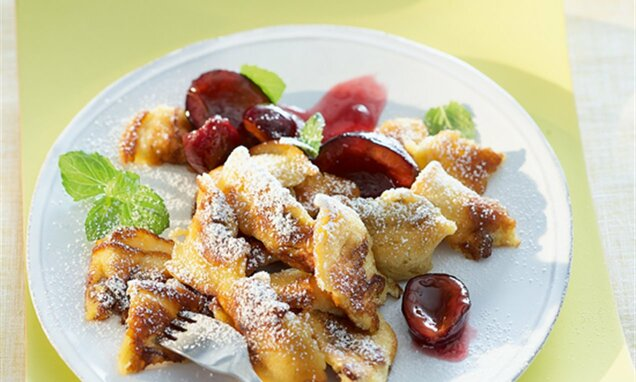
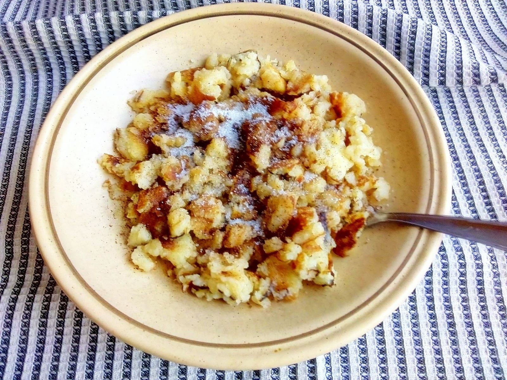

Recept za carske mrvice


POTREBNI SASTOJCI:
- 2 jajeta
- 150 ml ulja
- 3 kašike šećera
- 150 ml mleka
- 100 g brašna
- malo soli
PRIPREMA:
- U veću posudu sipajte brašno, razbijte 2 jajeta i dodajte šećer i malo soli
- Smesu mešajte dok ne razbijete sve grudvice.
- U dobro umešanu smesu sipajte malo mleka, promešajte, dodajte ostatak mleka i mešajte dok ne dobijete homogenu masu.
- Zatim pripremljenu smesu pržite u vrelom ulju.
- Kada masa počne da se steže počnite da mešate
- Pržite uz neprestano mešanje razmijajući veće komade, sve dok ne dobijete mrvice.
- Poslužite ih posute sa šećerom ili prelivom sa višnjama
PRIJATNO
VRH